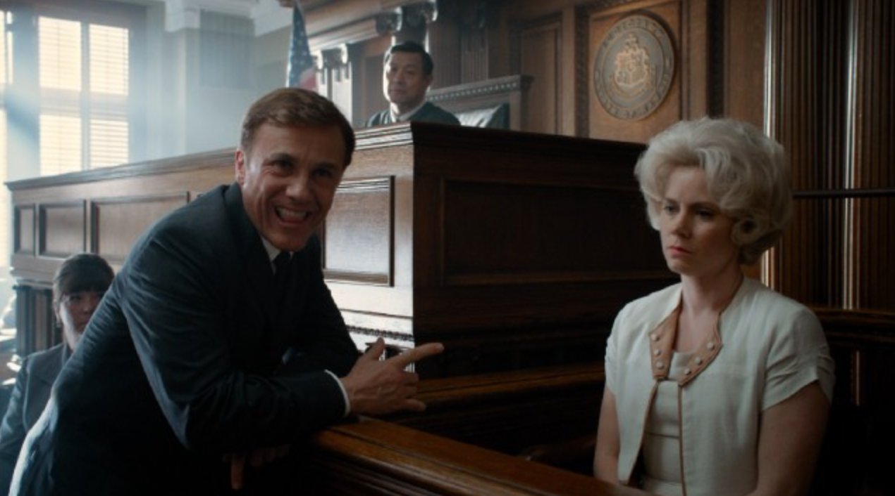

Excerpt from an Interview with Big Eyes Director Tim Burton
Q: There really aren’t many special visual effects in Big Eyes. Though you do make the Keanes’ house look awfully dark and forbidding for a glass-walled California dream house, and there’s a sequence where Margaret looks around and imagines everyone with huge eyes, like the ones in her paintings. Did you think her paintings were so weird you didn’t want to overshadow them with your own visuals?
A: Well, yeah, I think so. And also the story. Like, for instance, the courtroom scene. Some people may think it’s over the top, but we actually toned it down because the story itself is so out there. The judge wanted to tape his [Walter Keane’s] mouth shut. So, especially given all the other stuff I’d done, it was nice to keep it simple and let the strangeness of the story be the thing.

Extra commentary about the film
Christopher Waltz has been excellent in many films, with a knack for portraying ambition mixed with a smilingly callous approach to getting what he wants. With Walter Keane, Waltz telegraphs to us from the first moment we meet the character: "I am an unscrupulous individual. I am very sketchy. I am up to no good." Waltz can't resist "playing the villain", doing so with such relish that he has nowhere to go but into caricature. The performance ratchets up and up and up, until finally he is a complete maniac, culminating in a scene where he tries to burn his house down, with his wife still in it. Waltz is obviously enjoying himself very much in the role, but maybe too much.